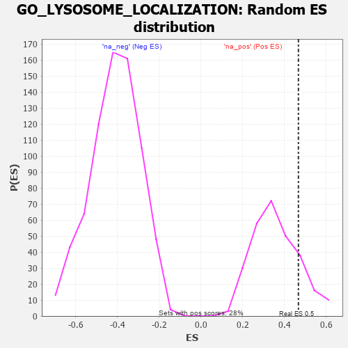

| | | Dataset | 7d |
| Phenotype | NoPhenotypeAvailable |
| Upregulated in class | na_pos |
| GeneSet | GO_LYSOSOME_LOCALIZATION |
| Enrichment Score (ES) | 0.46669173 |
| Normalized Enrichment Score (NES) | 1.3042868 |
| Nominal p-value | 0.15884477 |
| FDR q-value | 0.40272292 |
| FWER p-Value | 1.0 |
Table: GSEA Results Summary
 Fig 1: Enrichment plot: GO_LYSOSOME_LOCALIZATION
Fig 1: Enrichment plot: GO_LYSOSOME_LOCALIZATION
Profile of the Running ES Score & Positions of GeneSet Members on the Rank Ordered List
| PROBE | GENE SYMBOL | GENE_TITLE | RANK IN GENE LIST | RANK METRIC SCORE | RUNNING ES | CORE ENRICHMENT | | 1 | RAC2 | | | 60 | 2.442 | 0.3260 | Yes |
| 2 | FOXF1 | | | 176 | 1.136 | 0.4667 | Yes |
| 3 | TFEB | | | 839 | 0.522 | 0.4547 | No |
| 4 | SYK | | | 2186 | 0.278 | 0.3235 | No |
| 5 | ARL8B | | | 2577 | 0.216 | 0.3040 | No |
| 6 | FER | | | 2803 | 0.183 | 0.3007 | No |
| 7 | BTK | | | 2958 | 0.156 | 0.3027 | No |
| 8 | FES | | | 3501 | 0.077 | 0.2451 | No |
| 9 | CBL | | | 3621 | 0.056 | 0.2378 | No |
| 10 | VAMP8 | | | 4905 | -0.179 | 0.1010 | No |
| 11 | PDPK1 | | | 5043 | -0.207 | 0.1120 | No |
| 12 | FLCN | | | 5140 | -0.235 | 0.1320 | No |
| 13 | HDAC6 | | | 5183 | -0.244 | 0.1601 | No |
| 14 | VAMP7 | | | 5777 | -0.399 | 0.1400 | No |
| 15 | SNX4 | | | 5834 | -0.415 | 0.1896 | No |
| 16 | SYTL4 | | | 6304 | -0.578 | 0.2095 | No |
Table: GSEA details [plain text format]

Fig 2: GO_LYSOSOME_LOCALIZATION: Random ES distribution
Gene set null distribution of ES for GO_LYSOSOME_LOCALIZATION